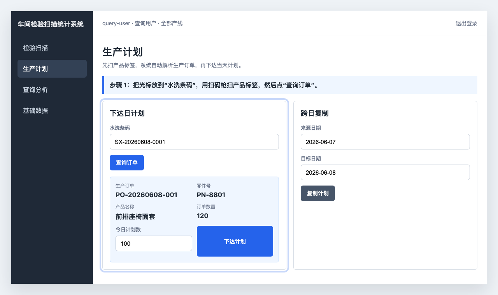
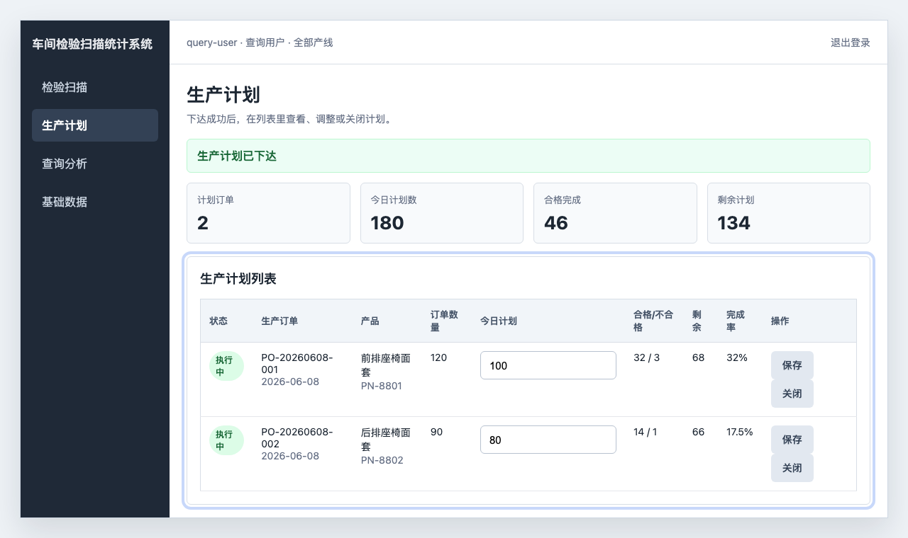
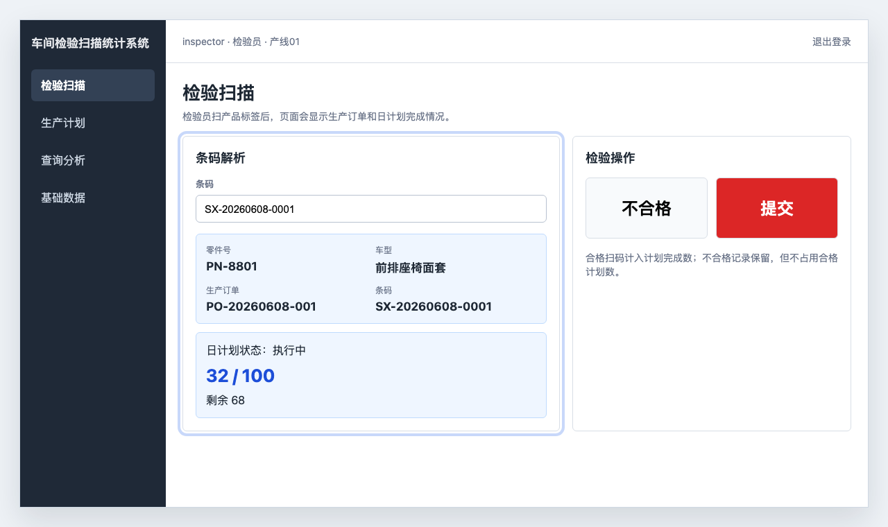
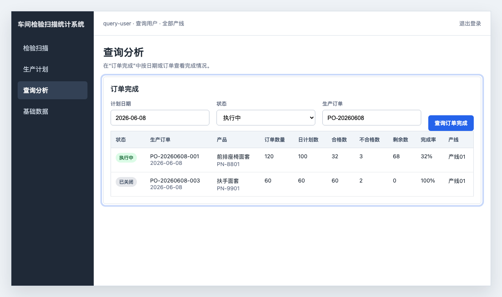

生产订单日计划软件操作说明
适用于现场查询用户、管理员和检验员。本文只讲软件怎么操作：如何扫描产品标签解析订单、如何下达计划、如何在检验扫描和订单完成里查看结果。
先说清楚：扫什么码
下达生产计划时，扫的是产品标签，也就是页面里的“水洗条码”。不要扫生产订单号。
软件会把产品标签发送到订单解析接口，接口返回后，页面会显示生产订单、零件号、产品名称和订单数量。只有解析成功，并选择计划产线后，才能下达当天计划。
| 操作 | 使用页面 | 使用人员 |
|---|---|---|
| 扫描产品标签解析生产订单 | 生产计划 | 查询用户、管理员 |
| 下达或调整今日计划 | 生产计划 | 查询用户、管理员 |
| 按计划扫码检验 | 检验扫描 | 检验员、管理员 |
| 查看订单完成情况 | 查询分析 - 订单完成 | 查询用户、管理员 |
一、扫描产品标签解析订单
登录系统后，点击左侧菜单 生产计划。
在 下达日计划 区域，先选择 计划产线。
点击 水洗条码 输入框，用扫码枪扫描产品标签。如果扫码枪没有自动回车，就点击 查询订单。
页面出现生产订单、零件号、产品名称和订单数量后，说明订单解析成功。

如果页面提示“生产订单查询失败”或“缺少生产订单号或订单数量”，先确认扫的是产品标签，不是订单号。
二、下达当天计划
确认解析出的生产订单和产品名称无误。
确认 计划产线 是当天实际生产这张订单的产线。
在 今日计划数 中填写当天要生产的数量。
点击 下达计划。
下方生产计划列表出现该订单后，计划生效。

同一个生产订单当天可以下达到多条产线；同一个订单在同一条产线上只能有一条计划。如果同订单同产线已经下达过，不要重复下达，直接在列表里修改 今日计划 或 产线，然后点击 保存。数量由用户自己控制。
三、检验扫码时查看订单计划
检验员登录时选择当前产线，进入 检验扫描。
在 条码 输入框扫描产品标签。
解析成功后，页面显示零件号、车型、生产订单、日计划状态和计划产线。
合格扫码会增加该订单的合格完成数；不合格记录保留，但不占用合格计划数。

如果当天没有给这个订单下达计划，或当前登录产线不是该订单计划产线，普通产品标签扫码会被系统拦截。需要先到“生产计划”下达或调整日计划。
四、查询订单完成情况
点击左侧菜单 查询分析。
打开 订单完成 标签页。
选择计划日期，可按状态或生产订单过滤。
点击 查询订单完成，查看合格数、不合格数、剩余数和完成率。

需要导出时，点击 导出Excel，系统会生成 订单完成.xlsx。
常见情况
1. 扫码后没有自动查询
扫码枪可能没有配置回车后缀。可以先手动点击 查询订单，再让设备人员配置扫码后自动回车。
2. 检验扫码提示没有当天计划
说明该生产订单当天还没有日计划。查询用户或管理员进入 生产计划，扫同一张产品标签并下达计划后，检验员再扫码。
3. 检验扫码提示计划已完成
说明该订单合格数已经达到今日计划数。如果现场要追加生产，在 生产计划 列表里调大今日计划数并保存。
4. 检验扫码提示订单未下达到当前产线
先确认检验员登录时选择的产线是否正确。若生产安排确实变更，查询用户或管理员进入 生产计划，找到该订单，调整 产线 并保存。
5. 订单解析失败
先确认扫的是产品标签。若同一类标签都失败，需要检查上游订单解析接口是否有该标签对应的生产订单和订单数量。